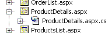
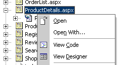

| IBuySpy 入口網站文件 | |
Visual Studio 專案注意事項 (VB)概觀。此版本的 IBuySpy 入口網站應用程式已封裝為 Visual Studio .NET 應用程式，更具體地說則是 Visual Basic .NET「ASP.NET Web 應用程式」專案。除了顯示 IBuySpy 入口網站應用程式之外，此範例還示範如何在 VS.NET 中實作實際的 Web 應用程式。 程式碼後置。ASP.NET 的最大優點之一，就是靜態內容 (HTML、文字與標記) 與程式碼更完整地分離。ASP.NET 中有許多不同的方法可以完成這項工作。IBuySpy 的 SDK 版本顯示「單一檔案」的做法，這裡的程式碼與靜態內容位於相同檔案，不過卻分開至單一的程式碼區塊。另一方面，VS.NET 偏好以 ASP.NET 的程式碼後置架構模式，從內容抽出程式碼。如此一來，頁面中的程式碼便是完整封裝類別，可以獲得在 VS.NET 編輯程式碼的所有優點如：程式碼語法色彩、陳述式完成、自動插入事件處理常式方法、設計階段語法檢查與完整偵錯支援。
在建立新的 ASP.NET 頁面或「Web 表單」時，VS.NET 會建立 .ASPX 檔案及程式碼後置檔案。依照預設，程式碼後置檔是隱藏的，不過您可以選取 [專案]> [顯示所有檔案] 檢視程式碼後置檔。 若要在 VS.NET 運用「Web 表單」，請在「方案總管」中的檔案名稱上按兩下，或是按滑鼠右鍵並選擇可用的動作。 [開啟] 會在設計檢視中開啟 ASPX 檔案，並在程式碼檢視中開啟 .VB 檔案。 [開啟方式] 讓您能為檔案選擇如「筆記本」之類的不同編輯器。 [檢視程式碼] 會一直開啟選取檔案的程式碼後置部分 (即使 ASPX 檔案是在選取的狀態下)。同樣地，[檢視設計工具] 則會一直開啟 ASPX 檔案。
  「Web 表單」設計工具也使用 <%@ Page %> 指示詞 (或是使用者控制項的 <%@ Control %> 指示詞) 來聯繫兩個檔案。在 VS.NET 建立的程式碼後置 ASP.NET 頁面與使用者控制項，所需的屬性最少要有：
<%@ Page Language="vb" AutoEventWireup="false" Codebehind="WebForm1.aspx.vb" Inherits="PortalVS.WebForm1"%>
<%@ Control Language="vb" AutoEventWireup="false" Codebehind="myControl.ascx.vb" Inherits="PortalVS.myControl"%>
專案屬性。在 Visual Basic .NET 應用程式中，專案內程式碼的 .NET 命名空間，和將要建置的組件名稱，都是由「專案屬性」所提供。在此專案中，組件名稱設定為 Portal。預設的命名空間則並未設定，讓開發人員能夠就每個檔案明確選擇命名空間。若要參閱此項設定，請檢視 [專案] > [屬性]。 「專案屬性」的另一項有趣功能，便是在專案階層指定 Imports 陳述式的能力，這可以減少每個程式碼檔案中的幾行程式碼。 編譯及執行應用程式。對程式碼後置類別所做的變更，必須在執行頁面之前先完成編譯。您可以使用 [建置] > [建置] 命令進行編譯。
若要在瀏覽器中瀏覽應用程式，請在 Default.aspx 檔上按滑鼠右鍵，並選擇其中一項「瀏覽」選項。 「在瀏覽器中檢視」 (Alt-V) 會在 VS.NET 中以預設瀏覽器開啟頁面。「瀏覽方式...」讓您可以選擇外部瀏覽器，甚至可以將其設定為「在瀏覽器中檢視」的預設瀏覽器。 若要在偵錯工具中啟動應用程式，請先設定中斷點，再在適當的頁面按右鍵，並選擇 [設定為起始頁]。然後按一下 F5 即可啟動偵錯工具。 | |